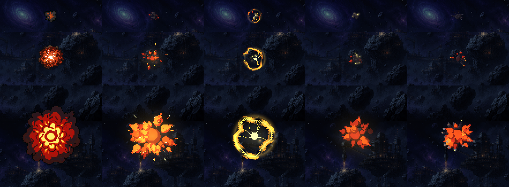
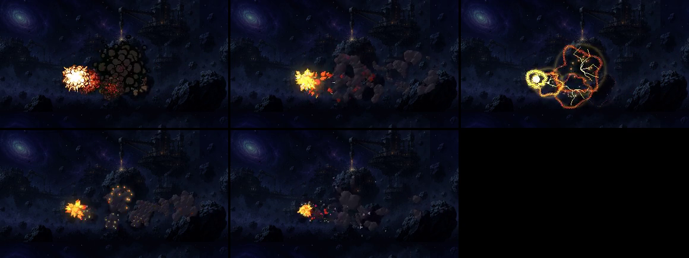
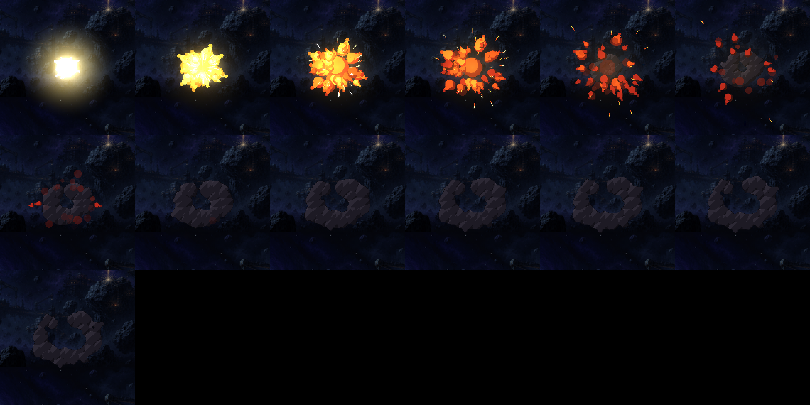
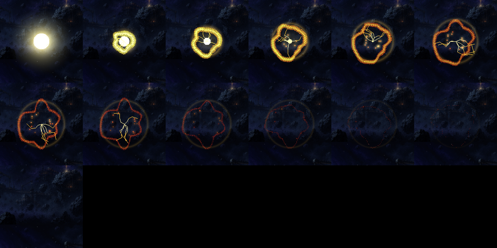
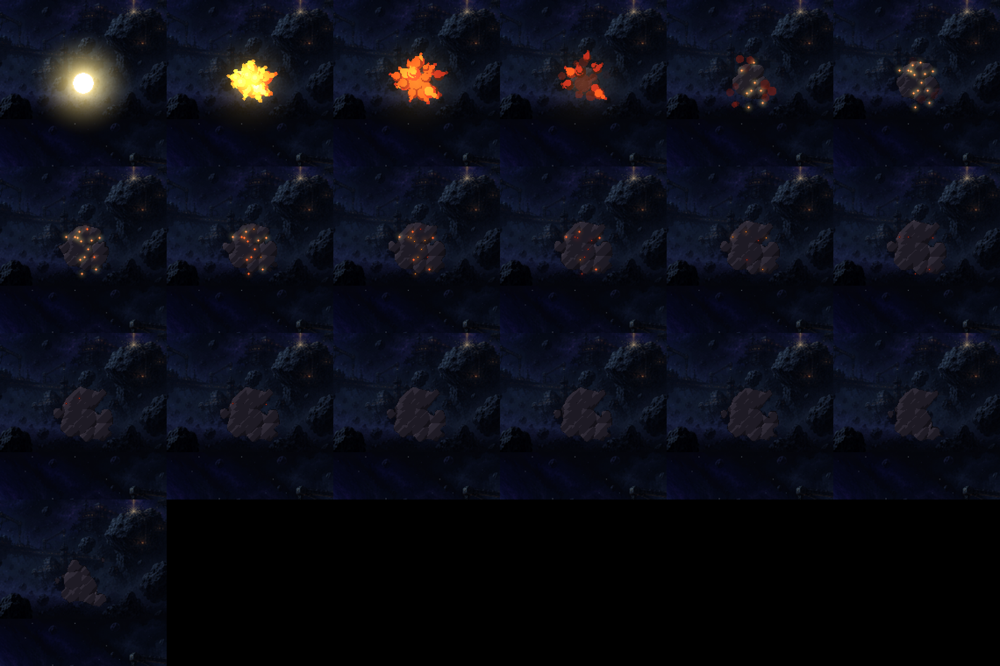
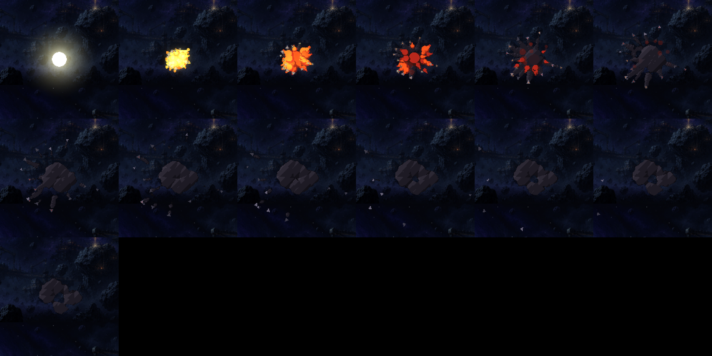

As explosões — os conceitos
09/11 · bloco I, etapa 1 (itens 9 e 14) · spec specs/2026-11-09-bloco-i-explosoes-design.md ·
ferramenta scripts/_i/_explosoes-conceitos.mjs. Nada mudou no jogo ainda.
A folha de explosão de hoje é usada em todo estouro do jogo. Os quadros do meio são anéis vermelhos lisos e os do fim, fumaça de bolinhas pretas: são os itens 9 e 14 ao mesmo tempo. Os quatro caminhos abaixo são desenhados em pixel com as peças do pixelfx (as bolas de fogo, as faíscas, as brasas, a luz) e estão todos no vácuo: nada sobe nem cai, a bola se abre, os estilhaços saem retos e a fumaça abre em esfera. A versão da F1, com a fumaça subindo, sai do escolhido.
- A · fogo e fumaça: a bola de fogo se abre em labaredas que esfriam, e uma fumaça escura se abre atrás.
- B · plasma: energia sem fumaça. Um núcleo branco, uma casca de contorno irregular que corre e afina, e arcos que estalam. Sobram brasas soltas.
- C · fumaça densa: pouco fogo e uma nuvem pesada que demora e se desfaz encolhendo, com brasas acesas dentro. É a resposta mais direta ao item 9.
- D · estilhaços: o fogo e pedaços de casco girando retos para fora, acesos no começo, cada um deixando um rastro de fumaça.
A fumaça precisou de três tentativas. Discos soltos liam como bolinhas de novo, a massa iluminada por inteiro lia como pedra, e o desfazer pelo pontilhado mostrava o xadrez. Ficou uma massa só de bolhas, cada uma com a sua tampa clara e contorno escuro, que encolhe até sumir.
Os três tamanhos, lado a lado com a de hoje
Em velocidade real, sobre a pintura da F2, no tamanho em que o jogo desenha cada uma hoje: a pequena (drones, batedores), a média (torres, a nave levando dano) e a grande (cargueiro, chefões, a bomba).

O mesmo quadro parado, aos 0,25 s.
Numa cena: a cadeia da cutscene 1
A "IMPACTO · A FROTA CAIU": 14 estouros a cada 0,15 s, varrendo da direita para a esquerda, um grande a cada quatro, como a cena faz hoje.
Em cima: hoje, A e B. Embaixo: C e D.

Aos 1,6 s.
A grande, quadro a quadro (a cada 3 quadros, ampliada 3×)
A · fogo e fumaça

B · plasma

C · fumaça densa

D · estilhaços

O primeiro quadro (o clarão branco) é o assunto da etapa 2, os flashes. Aqui ele é a explosão, não a tela.
Para você decidir
- Qual caminho: A, B, C ou D? Dá para misturar, por exemplo o fogo do A com a fumaça do C, ou o D para naves e o B para os inimigos alien.
- A duração: a de hoje some mais rápido. A fumaça nova fica até ~1,8 s na grande. Mais curta ou assim?